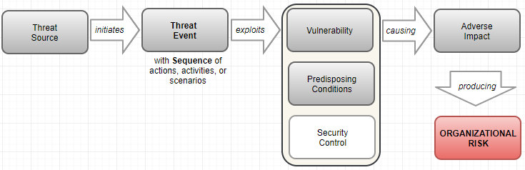
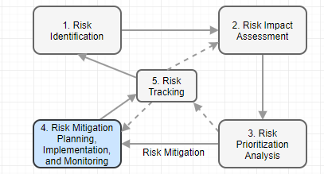
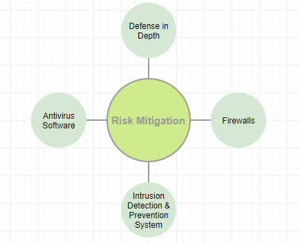

Digital
Forensics Plan for Samyang
Company Overview
Samyang, a sugar manufacturer in Korea, has more than 90 years of business with over 10,000 employees worldwide. There are multiple sugar cane plantations as suppliers in Indonesia and Brazil who supply Samyang with sugar cane through barge as bulk. The ingredient gets refined in two manufacturing factories in Korea. There are several sales and marketing offices in Seoul, Busan, Tokyo, Shanghai, London, and New York. Lately, there are additional facilities to manufacture finished goods where intermediate goods used to be major products so far.
The business environment has been changing when sugar is not the controlling price item anymore, and monopoly is not in government’s favor in recent years. As a result, lots of new players come to the market with the advanced information technology tools though they are lacking of experience and exiting customers’ base.
To cope with the internal and external challenges in sugar market, Samyang has implemented multiple enterprise solutions. The enterprise solutions comprise Oracle’s Fusion product for Supply Chain Management (SCM); Oracle’s JD Edwards EnterpriseOne as Enterprise Resource Planning (ERP); Oracle’s Siebel Business Application for Customer Relationship Management (CRM); and Oracle’s e-Commerce solutions for the online sales. Lately, Samyang is considering to migrate all these on-premises to the Oracle cloud to minimize the cost of ownership and soften impending security concerns.
Each solutions have their
designated servers for different purpose of transactions where users can access each systems using single sign on
(SSO). Access control is performed using Lightweight Directory Access Protocol
(LDAP) and each servers stores customers information, marketing materials, and
other proprietary data. Servers for SCM and CRM are sitting in the
demilitarized zone (DMZ) servers with multiple firewalls. Both Local Area
Network (LAN) and Virtual LAN (VLAN) are the communcation link to the enterprise
solutions except e-Commerce sitting in a proxy server which is open to the
public through the Internet. For storage network, which sits between logic
server and database server, Software-Defined Network (SDN) is in use. SDN
mediates the access between application layers and infrastructure layers of
computer systems. Each machines are encrypted using endpoint encryption tools.
Abstract
The
imporance of digital forensics is even paramount in highly connected in modern
computing environments because almost all organizations are very much dependent
on the modern information technology. The purpose of digital forensics plan is
to generate digital evidence in a civil or criminal investigation through the
collection, examinization, and analysis of digital data. The proactive aspect
of this digital forensic plan is to trobleshoot, monitor, recover, and protect
sensitive data in the organization.
This plan
follows a scientific process actively through the observation of threats and
vulnerabilities in computer systems and its network, and eventually it plans to
mitigate the risk. Firstly, data collection entails the chain of custody,
duplicate and validate evidence.
Secondly, examine and analyze the collected data through analytical tool
and reproduce digital forensics analysis procedure. Lastly, this plan generates
reports with conclusion and if needed to testmony of findings.
When
vunerability is a weakness or flaw in a certain system, risk is the probability
of a threat agent exploiting a vulnerability and the associated impact. The
threats penetrate the operating system, network, and the Internet. Attackers or
hackers can bypass physical security, gain access through social engineering,
warring, and other types of hacking using logic bomb, trojan horses, virus, and
warms.
The digital
crime can leave traces in multile layers of an organization information
technology infrastructure including opeating systems data including cache,
network and network traffice data, application data and its database, and
possibly multiple-source data.
It is
crucial to build incident response team to mitigate the security risks from
multiple sources in an organization with skill and knowledge on the networking
topology and configuration, intrusion detection system and intrusion prevention
system, securing evidenece, documenation. Same personnel should be literate to
conduct preliminary investigation, to have basic fluency of forensic tools in
computers and networks, to monitor network and its traffic, to preserver
evidence, and to write reports on findings.
It is imperative
to build robust evidence through accurate handling, containment, and examination
of evidence in the crime scene or the lab on seisured digital media. It is
vital to execute proper prepration and containment not to damage any evidence
for crimes which encompass evaluating and securing the scene, documenating the
scene, collecting evidence which has evidentiary value, and packaging,
transporataion, and storage.
Crime scene
investigators and lab technicians need to document both actions taken and their
findings in the report to minize the risk because adequate handling,
containment, and examinization of the evidence are essential to prevent
possible incident to occur for the organization. This reports includes all
custodians of the evidence using a Chain of Custody form. And same report
should indicate the scope of invistation let alone the methodology and
approaches used for investigation.
Table of Contents
Analysis
Process and the role of Incident response team
Technique
to Incident Identification
Identification
of Threats and Incidents
Network
and Internet Incidents
Importance
of Log Analysis in IDS/IPS
Prevention
and Mitigation Plan
Appendix
A: Risk Mitigation Technique and Plans.
Process
for Risk Mitigation Strategy
Risk
Mitigation Plan Activities
Risk
Mitigation Plan Implementation
Technique
to Mitigate Common Breaches
Analysis
Threats and Vulnerabilities
According to NIST, the threat is
the potential for a threat-source to
exercise a specific vulnerability, and threat-source is either (a) intent and
method targeted at the intentional exploitation of a vulnerability, or (b) a situation and method that may accidentally
trigger a vulnerability (NIST, 2012). On the
other hand, vulnerability is a flaw or weakness in any aspect of the system
(Elky, 2006).
In moving forward, it is important to review the existing network topology of Samyang to determine the threat and vulnerability because the probable attack is through the network. As depicted in Figure 1, there are groups of users: internal and external where external user are categorized the named users like suppliers and anonymous customers for e-Commerce.

Figure 1. Network Topology for Samyang
Based on current network configuration, possible threat agents are remote users, local users, clients. And the attack can cause potential Denial of Service (DoS). Here we review threats and vulnerabilities in detail.
Remote
Remote access is the capability of users to access its secured resources from locations outside company’s network (Scarfone, n.d.). Since Samyang is a global business entity, it is inevitable to allow a certain users to access the network remotely to perform daily transaction using ERP and CRM applications. As depicted in Figure 1, all internal and external users have means to access Samyang’s network through one or other ways using the Internet.
As result, this business activity leaves vulnerabilities below (Scarfone, n.d.),
· Devices for remote access are weaker security measurement in using Wi-Fi connection, and the physical security is not robust
· Personal hand held device which does not have control (smartphone, tablet, etc.)
· Lacking of Firewall and antivirus software in these devices
· Using device in hostile environment where is not configured for these usages
· Communication performs in untrusted network.
Hence, the possible threat from remove access can be (Scarfone, n.d.),
· Someone can monitor and manipulate the communication
· Open up rogue wireless access point
· Exploitation of devices and users including theft or loss of remote access devices
· Loophole for sensitive data through phishing, key loggers, and so on
· Unauthorized access to company’s resources.
Some literature describes the modification of data, eavesdropping, and spoofing when the network is not secured.
Local
Each enterprise solutions (CRM, ERP, SCM, and e-Commerce) which Samyang are running have its application level security to have proper access control. Currently, single-sign-on (SSO) and Lightweight Directory Access Protocol (LDAP) are in place. However, it is high time to review whether all sensitive data are secured properly though vulnerability and threat for the internal users within company’s network.
Some of internal vulnerabilities are (Manky, 2010),
· USB thumb drives which give easier means for users to communicate whereas there is no control on it and Optical media like CD-ROM which can store sensitive data
· Laptop and netbooks give carry around globe where it contains sensitive data
· Remote Desktop capability using single sign on which may allow the access point to other machines
· Smartphones which is personal with camera, recording, and USB connection
· And E-mail can pose as vulnerability in not complying with company’s policy.
So the internal threats are (Whittle, 2008).
· Malicious cyberattacks by technically proficient employees and other illegal activities by the employees
· Social engineering within company to gain access to the machines or data
· Downloading malicious internet contents which firewall failed to filter
· Information leakage through smartphones, USD thumb drives.
Client
It is important for Samyang to provide sufficient information to the customers including online invoice, tracking, cataloging, and supply demand data in the area of CRM, SCM and e-Commerce areas to gain better customers’ satisfaction. Since suppliers and customers access these applications using the Internet, which repeats the vulnerability of internet where the solutions have its database. It is commonplace to access these systems using mobile devices including smartphones, tablets, and so on, which in turn, possesses vulnerabilities and threats.
Probable vulnerabilities are (Mookhey, 2004),
· Weak authentication and authorization because there is no background checking
· Insecure wireless access points
· SQL Injection, Cross-site scripting, and remote command execution
· Price or web data manipulation through web scripting.
On the other hand, the threats are,
· Virus, spywares, adware, Trojan horses, Back doors, Sniffers, and Spoofing
· Phishing
· Data manipulation
· Brute Force threat using exhaustive key search.
Denial of Service
Denial of Service (DoS) is overloading the resources for target till it crashes, which disturbs the availability in information security principle. The resources can be network bandwidth, server memory, application exception handling, CPU usage, hard disk space, database space, and database connection pool. As depicted above, almost all companies fall prey to this types of attack and Samyang is not an exception.
The vulnerabilities pertain to DoS can be any software,
· Cisco network for both LAN and wireless
· Oracle Enterprise Linux 7.3
· Oracle database 11g
· Oracle WebLogic 11
· And the enterprise solutions are potentially vulnerable in missing any patch
And threats are (AppliCure, n.d.),
· Ping flooding by sending an overwhelming number of ping packets and peer-to-peer attack which cause a web service down
· Application level flood to exploit bandwidth, race condition in multi-threaded system, buffer overflow in multiple enterprise solutions at Samyang
· Wide open query execution and SQL injection using CPU-intensive query
· Large file upload to the server to use up bandwidth.
Summary
According to Hayes, the very advanced attack comprises six stages as depicted in Figure 2 (Hayes, 2015),

Figure 2. The Intrusion Kill Chain
Above figure gives idea on the
threat factors well even when the attack is not
sophisticated.
Computer System Incidents
A computer system comprises processor, main memory, I/O module, and system bus. And the definition of computer includes file systems, virtual machines, embedded system, its network, and distributed system. A security breach is the unauthorized access of information to acquire, access, use, or disclose it in computer systems. On the other hand, a threat is a potential for threat-source to exploit or excise to attack a vulnerability, which results in a security breach or a violation of the system’s security policy (Elky, 2006). Here we review some of known threats and breaches against computer systems and some of technique to determine the root cause of each breaches.
Types of Breaches
An event is any observable occurrence in a system or network which can gives sign that an incident is occurring (Kissel, 2011). Figure 3 below depicts the model which causes a certain organization at risk (NIST, 2012).

Figure 3. Risk Model with Threat Event
Here reviewing five well-known types of security breaches which are malware, phishing, password attacks, ransomware, and denial-of-service (ERM, n.d.).
Malware
Malware is general term to describe virus. Possible events are 1) delivering known/modified malware to internal organizational information systems; 2) delivering targeted malware for control of internal systems and exfiltration of data; 3) using removable media; 4) planting malware into downloadable software; 5) inserting targeted malware into organizational information systems and its components; 6) injecting specialized malware on system configuration; 7) inserting tempered hardware component into the supply chain; 8) inserting general purpose sniffers; 9) inserting malicious scanning devices; and 10) forge subverted person into organization (NIST, 2012).
Phishing
Phishing is to access personal information by masking intention. Nowadays some personal information gets gathered using phishing page. Possible events comprise a malicious email to bypass legacy spam filters, firewalls, and gateway security scan. Email with link to lead to another web page which is deceptive. Scammer sends email using the known identification to the one within my contact list. Domain Name System (DNS) cache poisoning to redirect users access. And luring user to sign in fake Dropbox or Google Drive (Bisson, 2015).
Password Attacks
Brute Force Attack, Dictionary Attack, and Key Logger Attack are common method to find out the password of yours. Possibly performing perimeter network scanning, network sniffing, gathering information using open source discovery in organization, or performing malware-directed internal reconnaissance (NIST, 2012).
Ransomware
Ransomware usually is targeting the organizations that need access to sensitive data promptly by asking ransom. Possible events are crafted attacks specifically based on deployed information technology information, and the events similar to malware attacks.
Denial-of-Service
The adverse event of denial-of-service (DoS) is that a website is inundated with requests or data until the system crashes. Common way is using a host of personal computer. Possible events are conducting communication interception, wireless jamming, attacking using unauthorized ports, protocols, and services.
Analysis Process and the role of Incident response team
As reviewed above, security breaches are commonplace. The table 1 describes how we identify the attack and set the countermeasure for the attack to prevent and minimize the adverse impact to the organization.
Table
1. The Identification of Breaches and Role of Incident
Response Team
|
Security Breaches |
Analysis Process for Identification |
Role of Incident Response Team |
|
Malware |
. Code (static) analysis to view actual code . Behavioral (dynamic) analysis to identify when executed, whom talk to, what, and how it runs (Distler, 2007). |
. Deny all outbound SMTP traffic except for the identified SMTP serves . Containment phase process – remove affected host, cable, redefine firewall. |
|
Phishing |
. The email message contains a mismatched URL, poor spelling, and grammar . URLs contain misleading domain name . The message asks for personal information . The offer is exceptionally good . The message makes unrealistic threats . The message appears to be form of a government agency (Posey, 2015). |
. Disable the ‘abuse box’ of Email . Organize all possible email and sender . Collaborative work with other team to find out the real threats . Educate the employees. |
|
Password Attacks |
. Identify POP2 password cracking . Port scanning (Packtpub online, n.d.) |
. Filter the access based on protocols . Check FTP communication . A cyber security Capture the Flag (CTF) . Check network traffic . Examine sniffing attacks |
|
Ransomware |
. File system activity – deletion of log, trigger alerts . User behavior analytics (Ng, 2017). |
. Rapid containment . Protect, contain, and isolate high value asset . Device guard . Keep operating system and software up to date . Harden endpoints some defender tools (Microsoft online, n.d.). |
|
Denial-of-Service |
. Check web stats . netstat -an in HTML server . Check log files in HTML server (Thatcher Online, 2013) |
. Check the performance of HTML client |
Incident response comprises preparation, identification, containment, eradication, recovery, and lesson learned. So the role of incident response team repeats each steps for an individual security breaches (Distler, 2007).
Technique to Incident Identification
There are various means and techniques to identify the security breaches which can cause millions dollars of loss for the organization attacked.
Table
2. Techniques for Threats Identification
|
Security Breaches |
Techniques |
|
Malware |
. Basic Static Analysis: File name, MD5 checksums or hashes, file type, file size . Basic Dynamic Analysis: domain names, IP Address, file path, registry keys, file location (Scott, 2017). |
|
Phishing |
. The technique to identify phishing are vary because of the variety of methods: Spear phishing, Email/Spam, Web Based Delivery, Link Manipulation, Keyloggers, Trojan, Malvertising, Session Hijacking, Content Injection, Phishing through search engine, Voce phishing, SMS Phishing . Intrusion Detection System (IDS) is mostly commonly used technique to determine the attacks |
|
Password Attacks |
. Event log analyzer . Protocol analyzer . Accountability and Authentication tool . ASCII decode |
|
Ransomware |
. Intrusion Prevention (IPS) to detect activity over the network . Network File Share Protection |
|
Denial-of-Service |
. Ping servers – Time to live 503 request time out error . Log analysis solution which determines spike in traffic |
Whatever the types of incident, it is important to go through to review information below to collect the evidence (Brezinski & Killalea, 2002),
- CPU Registers and Cache in RAM
- Routing table, Process table to determine the application executed, and Kernel statistics
- Temporary File Systems in C Drive
- All remote logging and monitoring data
- Physical configuration of hardware and network topology
- Any archived data
Identification of Threats and Incidents
Based on breaches in security incident, breaches take place in multiple threat sources.
Remote
The internal users outside company’s network are more vulnerable than local client regardless Firewalls and Virtual Private Network (VPN) even when IDP/IPS are in place. Hence, any breaches associated with network incident are related with users with remote access.
Local
The local users are highly dependent on the network infrastructure which company has implemented. However, the attacker can target any of user or machine as entry point of attack when getting information on configuration and network. Anti-virus software, IDS/IPS help security specialist to identify the breach threats effectively.
Client
Numerous phishing and ransomware attackers exploit the system through the portal to access the company’s network. Tighten rules for access control identifies the threat.
DoS and DDoS
Common way to determine Denial-of-Service (DoS) or distributed DoS (DDoS) are by examining the unusual slow network performance, unavailability of a certain website, disconnection of network and so on.
Summary
This section focuses on the attacks which is specific to data breaches. Since the security principle is Confidentiality, Integrity, and Availability (CIA), the risks of Malware, Phishing, Password Attacks, Ransomware, and Denial-of-Service can damage the business and reputation greatly for Samyang. To protect data properly, Samyang need review below (MIT, n.d.),
·
A Data Security
Review;
·
Create a proper plan
to review data security status and its policies;
·
Categorize
confidential data and less important data;
·
Timely housekeeping
– archive or purge; and
·
Implement
physical security.
Network and Internet Incidents
The business nature of Samyang requires highly distributed network because of broad suppliers in oversea and newly implemented e-Commerce to the public. Figure 4 represents when Intrusion Detection System (IDS) is in place to access corporate network.

Figure 4.IDS/IPS for Samyang
Here we review the importance of Log Analysis in above configuration and its prevention and mitigation plan in detail including Log based Intrusion Detection System (LIDS).
Importance of Log Analysis in IDS/IPS
It is meaningful to review the difference between Intrusion Detection System (IDS) and Intrusion Prevention System (IPS) as depicted in Figure 5. Nonetheless, it is important for Samyang to review the cost factor in these systems.

Figure 5. IDS vs. IPS
Table 3 describes the basic function of IDS and IPS (Scarfone & Mell, 2007).
Table
3. Function of IDS and IPS
|
IDS |
IPS |
|
Recording information related with observed event |
Stopping the attack itself |
|
Notifying security administrator of important observed event |
Changing the security environment |
|
Producing reports |
Change the contents of attacks |
Intrusion Detection System and Protection System (IDPS)
Intrusion detection is the technique of monitoring a certain events occurred in a computer system or network through possible signs for incident including violation of security policies. Hence, Intrusion Detection System (IDS) is software to automate the detection of attack (Gupta, 2012). There are two IDS models in use for many companies, where are Host-based and Network-based, and many anti-virus applications work such manner because both models have its weak points. Another model to discuss is Log-based Intrusion Detection System (LIDS) to detect attacks, security policy violation, and the misuse of computer systems using the logs generated by IDPS. The primary goals of IDPS using Security Information and Event Management (SIEM) as follows (Scarfone & Mell, 2007),
· Identifying incidents and supporting incident response efforts;
· Identifying security policy problems;
· Documenting the existing threat to an organization; and
· Deterring individual from violating security policies.
Log Management
Both Big Data and Artificial Intelligence (AI) are pervasive in each industry to have better decision making in recent years. To some extent, the LIDS follows same approach as these with primary decision source (Log) and its analysis (Intelligence). The usage or usefulness of logs are evolved from a simple troubleshooting to optimize system/network performance, to record the actions of users, and to supply data for investigating malicious activity (Kent & Souppaya, 2006). The sources of computer security logs comprise the logs from security software (antivirus software, firewall, and IDS/IPS), operating systems for both client, server, networking equipment, and various applications. As the volume of logs grow exponentially it is essential to have computer security log management to generate, transmit, store, analyze, and dispose it (Kent & Souppaya, 2006).
Threat and Vulnerability Identification using Log
There are common detection methodologies which enable incident response team to identify the threats and vulnerabilities in the system and networks as below (Scarfone & Mell, 2007),
· Signature-Based Detection: the process of comparing a pattern against observed events to identify possible incidents. Attempt using a user name root which violates a security policy. Email attachment with execution file which is a typical malware. Log entry indicates host’s auditing is disabled.
· Anomaly-based Detection: the process of comparing normal activities against observed events using profiles encompassing users, hosts, network connections, or applications in an organization. Hence, it is effective in detecting new threats. The way to identify threat and vulnerability using this model is through the event logs like, consuming abnormal system resources, sending unusual email, initiating too much network connection, and executing unusual (out of profile) activities.
· Stateful Protocol Analysis: the process of comparing benign protocol activities which is vendor developed universal one against observed events. Identifying unexpected sequence of commands. Keep on tracking the authenticator used for every session. Recording the authenticator used for suspicious activity. Checking whether individual command is reasonable or not including maximum and minimum arguments length.
Prevention and Mitigation Plan
The focal points of security transits from the infrastructure landscape to user security focus with the environments: complex computer systems, hidden network infrastructure, malicious software, viruses, warms, and risk of identity/asset theft (Antonelli, 2006). Hence, the objectives are
· How to secure the network
· How to secure the user
· How to specify the types of threats to protect and the level of monitoring system and network usage to comply with security policies.
In this section, possible steps to prevent intrusion and techniques to mitigate current vulnerabilities where the vulnerabilities lie in people and policy, process, and technology.
Previously, the benefits of IDPS entail as below (Gupta, 2012),
· Detect/prevent unauthorized access
· Meet/comply regulatory and legal requirement
· Enables forensic analysis
· Track suspicious behavior
· IT troubleshooting and network operation
· Monitor user activity
· Best practice and framework.
Here we review detail on the objective constructed during IPDS review.
Steps to Prevent Future Attacks
Preventing attacks through network and the Internet needs careful analysis and planning to stop an attacker from unauthorized modification, destruction, or disclosure. When it comes to network, firewalls, network scanning, and security risk assessment are most important steps where password security, social engineering, and secure remote login are important ones in securing user.
Security risk assessments addresses the potential adverse impact to the organizational operations, individuals, assets addressing people and policy, process, and technology. Same encompasses the use of information systems, and the information processed, stored, and transmitted (NIST, 2012).
Commonly, the security risk assessment follows as below (Elky, 2006),
· Identify security threats in network and Internet:
· Identify vulnerabilities:
· Relate threats to vulnerabilities where risk is the exercise of a threat against a vulnerability:
· Define likelihood
· Define impact
· And assess risk
As system development lifecycle, the framework of security risk assessment for preventive purpose are (NIST, 2012),
· Categorize – threat sources, threat events, and vulnerabilities in organization and its environment.
· Select – inform and guide the selection of security controls on requirements, assumptions, constraints, priorities, trade-offs.
· Implement – implementation of selected security control.
· Assess – assess security control assessments with output which identifies vulnerabilities.
· Authorize – enable authorizing officials to make security risk-based decision.
· Monitor – as the last steps to evaluate the effectiveness of security control, changes in systems, and compliance to the regulation, policies, standards, and guidance.
In other words, the prevention steps encompasses security policy, security awareness, and access control using identification, authentication, and authorization.
Steps to Mitigate Current Vulnerabilities
Mitigation includes remedying the flaw or supply some compensatory control to reduce or minimize impact associated with vulnerabilities. At once relating threats with vulnerabilities, it follows the step below (Palmaers, 2013),
· Preparation – to limit the scope of implementation
· Vulnerability scan
· Define remediation actions – analyze the vulnerabilities, determine the associated threats, and provide input on remediation
· Implement remediating actions
· Rescan
Well-known threats comprise unauthorized access, inappropriate access of resources, disclosure of data, unauthorized modification, disclosure of network traffic, spoofing of network traffic, disruption of network function. Where threats are errors and omission, fraud and theft, disgruntled employees, physical and infrastructure, malicious hackers, and malicious application (Ahmad & Habib, 2010). Common attacks in the network comprise 1) Denial of Service (DoS, to user up resource), 2) Distributed DoS (DDoS, to flood the resource or bandwidth), 3) man in the middle, 4) social engineering, 5) virus, 6) warms, 7) buffer overflow, 8) packet sniffing, 9) FTP bounce, and 10)smurf which exploits the common network toll like ping.
It
is important to review current security technologies to mitigate the
vulnerabilities as below,
·
Firewall not to allow unauthorized users off the network
·
Virtual
Private Network (VPN) to give
business partners (both suppliers and customers) and employees secure access to
the network
·
Intrusion detection
and prevention to detect and stop
threats before they harm the network
·
Content
security to protect the network from
virus, spyware, and other attacks
·
Secured
wireless network (Wi-Fi) to supply safe
network access to visitors and mobile employees
·
Identity
management to give control over
who/what can access the network
·
Compliance
validation to ensure that any devices
accessing the network meet the security requirements (Cisco, n.d.).
Conclusion
The purpose of digital forensics plan for Samyang is to explore threats and vulnerability in computer systems and network to guide and implement proper mitigation plan, and to provide countermeasure against security risk. Since digital forensic plan follows typical scientific method, focus was made in internal system configurations and external threats including various threat sources.
Based on threat sources, remote, local, and client, various vulnerabilities are discovered in the area of people and policy, process, and technology area. Detail vulnerabilities are inadequate policies and procedures, security through obscurity, misconfigured operating systems and embedded devices, in appropriate wireless communication, lacking of intrusion detection, and lack of change management.
There are various types of breaches affecting computer systems. Well-known breaches are malware, phishing, password attack, ransomware, and denial-of-service. After analyze the source of attack, proper incident response action need taking where the incident response life cycle which comprises 1) preparation; 2) detection and analysis; 3) containment, eradication and recovery; and 4) Post-incident activities.
The log analysis mechanism through instruction detection/prevention system (IDPS) are most important to prevent known attacks and potential attacks. The primary purpose of IDPS is to identify incidents, security policy problem, document exiting threats, and deter individual when violating security policies. Network-based, wireless, network behavior analysis, and host-based IDPS have its own merit and capabilities with prevention capabilities.
The purpose of the incident management process are (proactively) to mitigate the adverse effect of incidents against normal business operations with precursor sign and (reactively) to restore services and operations to the production environment as quick as possible using indicator sign. Digital forensics gets more important in both law enforcement and corporate security department because crimes are associated with some digital means. Not to mention, it is important to have fluent forensic tool set where the logs, data, and information grows exponentially. These tools function like big data artificial intelligence, which analyze given information and maintain solid proof of any criminal activities.
Appendix A: Risk Mitigation Technique and Plans
Since risk assessment is most important process in risk management plan, it is noteworthy as depicted in Figure 6 (NIST, 2012),

Figure 6. Risk Management Process
Above figure emphasizes on the important of communication within organization when risk is understood.
Process for Risk Mitigation Strategy
So far, the steps for risk assessment methodology follows 1) Identifying threats; 2) Identifying Vulnerabilities; 3) Relating Threats to Vulnerabilities; 4) Defining Likelihood; 5) Defining Impact; and 6) Assessing Risk (Elky, 2006). And various mitigation strategies were provided based on threat-vulnerability relationship. The primary purpose of risk identification (step 1, 2) and analysis (step 3 through 6) is to prepare for risk mitigation. Possible process for risk mitigation strategy are (NAP, 2005),
· Characterizing on the cause of security risks which was identified and quantified
· Evaluation of risk interactions and common causes
· Identification of alternative mitigation strategies, methods, and tools
· Assessment and prioritization of mitigation alternatives
· Selection and commitment of resources required for risk mitigation alternatives
· Communication on planning results to all risk stakeholders to implement it.
Risk Mitigation Plan Activities
Risk mitigation planning comes into picture after risk is analyzed as depicted in Figure 7.

Figure 7. Risk Mitigation Process
The risk mitigation plan (RMP) is based on realistic, achievable, measurable means containing followings (AcqNotes, n.d.),
· A title with the identified risk
· Plan date
· Contact point who is responsible for controlling the identified root cause
· Risk description including summary of performance, schedule, and resource impact, likelihood, consequence, and controlling scope
· Why root cause exist
· The options to mitigate it including alternatives
· Definition of events and activities to reduce the risk, success criteria for each event
· Risk status
· The fallback approach
· A management recommendation
· Approval level.
Table 4 represents a plan of Action & Milestones (POAM) (Elky, 2006),
Table
4. Sample of Plan of Action & Milestones
|
Risk |
Strategy |
POC |
Resource ($) |
Milestones |
Target Completion |
Actual Completion |
|
|
|
|
|
|
|
|
Risk Mitigation Plan Implementation
Based on a Risk Mitigation Plan (RMP), a risk mitigation plan implementation is to be sure successful risk mitigation. The contents and procedure encompasses (AcqNote, n.d.),
· Planning, budget, and requirements
· Provide a coordination means with management and other risk stakeholders
· Lead the teams to execute the Risk Mitigation Plan (RMP) which are defined and approved
· Risk reporting requirement for continues monitoring as depicted in Figure 6 and 7
· Document the history of change made if any.
Technique to Mitigate Common Breaches
As reviewed earlier, the most prevailing threats are malware, phishing, password attacks, ransomware, and denial-of-service in modern computing environment. And vulnerabilities lie in people and policy (organization level), process (mission/business process level), and technology (information system level). Common threat events are 1) performing reconnaissance including gathering information; 2) crafting attack tools; 3) delivering /embedding/installing malicious capabilities; and 4) exploiting and compromising before actual attack takes place. Here review the technique to mitigate the common breaches at high level (McGinley, 2017),
· Take security managers to the top
· Adopt a defensive security posture in the organization
· Iterate a data management plan
· Create an incident response team
· Establish and train incident response team
· Develop better relationship with customers and suppliers (McGinley, 2014)
On the other hand, to keep up with security principles,
· Confidentiality: Encryption, Authentication, Access Control, Patch and update management, Antivirus software, Firewalls, and Intrusion Prevention System
· Integrity: Authentication, Authorization, Data validation, Audit, and Backup
· Availability: Firewall, Uninterruptable power supply (UPS), Redundancy, Physical security, and Backup.
Detail technique depicted in Figure 8 (CMU, n.d.),

Figure 8. Risk Mitigation Techniques
· Defense in Depth: multiple layers of security to protect assets
· Firewall: to protect network based attack
· Intrusion Detection and Prevention Systems (IDPS): to stop the malicious traffic or security breach
· Antivirus Software: to detect, quarantine, and remove malware.
Post Incident Review
As the last process of incident management lifecycle, post-incident activities include (Cichonski et al., 2012),
· Create a follow up report;
· Hold a lessons learned meeting; and
· Retain evidence.
Commonly Post Incident Review encompassed items above as an effective way to improve incident response planning and procedure based on “lesson learned.” Through this report, organization can identify and correct weaknesses, and determine strengths. Table 6 represents a template for Post Incident Report which is the outcome of Post Incident Review (UWSUPER, 2014).
Table
6. Post Incident Report Template
|
Post Incident Report Incident Summary Incident Details Resolution/Restoration of Services Technical Lessons Learned/Action Items The positives Improvements Communication Lessons Learned/Action Items Initial Issue communication Strength Weakness Notification to the security stakeholders Strength Weakness |
The post incident report should include (ServiceNow online, 2017),
· The triggering incident which leads to the security incident
· Changed, problems, and vulnerability associated with the incident
· A description on the security incident
· The entire activity log with all works done, response activities and tasks
The primary purpose of “lesson learned” meeting is to go through possible opportunities which can prevent and mitigate similar incident in the future by answering questions below (Cichonski et al., 2012),
· What is the incident happened, and when it is occurred?
· How staff and management performed the incident handling?
· Do they follow the documented procedure? Were those documents adequate?
· What is the piece of information needed immediately?
· Did steps or action prevent the recovery?
· How same staff and management deal with it when similar incident happen?
· The information sharing with other team or group can be improved?
· What will be corrective action to inhibit similar issue in the future?
· What would be precursors or indicators to exam in the future?
· What kind of tools will be useful to detect, analyze, and mitigate the incident may come in the future?
References
AcqNote. (n.d.). Risk
Mitigation Plan (RMP). Retrieved January 24, 2018, from http://acqnotes.com/acqnote/tasks/risk-mitigation-plan
AcqNote. (n.d.). Risk
Mitigation Plan Implementation. Retrieved January 24, 2018, from http://acqnotes.com/acqnote/tasks/risk-mitigation-plan-implementation
Ahmad, N. & Habib, M. K. (2010). Analysis of Network Security Threats and
Vulnerabilities by Development & Implementation of a Security Network
Monitoring Solution. Retrieved January 23, 2018, from https://pdfs.semanticscholar.org/287d/b9144f1c0fbd806e566df4c90568dfdd1103.pdf
Antonelli, C. (2006). Network Security: Prevention, Detection and Mitigation. Retrieved
January 23, 2018, from https://www.researchgate.net/publication/267998403_Network_Security_Prevention_Detection_and_Mitigation_Content
AppliCure. (n.d.). Prevent
Denial of Service (DoS) Attacks. Retrieved January 17, 2018, from http://www.applicure.com/solutions/prevent-denial-of-service-attacks
Bisson, D. (2016). 6 Common Phishing
Attacks and How to Protect against Them. Retrieved January 20, 2018, from https://www.tripwire.com/state-of-security/security-awareness/6-common-phishing-attacks-and-how-to-protect-against-them/
Brezinski, D.,
& Killalea, T. (2002). Guidelines for evidence collection and
archiving. Retrieved February 18, 2007, from http://www.ietf.org/rfc/rfc3227.txt
Cichonski, P. Millar, T. Grance, T. Scarfone,
K. (2012). Computer Security Incident
Handling Guide, Recommendations of National Institute of Standards and
Technology. Retrieved January 11, 2018, from http://nvlpubs.nist.gov/nistpubs/SpecialPublications/NIST.SP.800-61r2.pdf
Cisco. (n.d.). Network Security Checklist. Retrieved January 22, 2018, from https://www.cisco.com/c/en/us/solutions/small-business/resource-center/secure-my-business/network-security-checklist.html
CMU. (n.d.). Methods
for Mitigating Security Threats. Retrieved January 25, 2018, from https://oli.cmu.edu/jcourse/workbook/activity/page?context=e6f7bf0980020ca600bd3056fa1100ea
Distler, D. (2007). Malware Analysis: An Introduction. Retrieved from January 21, 2018,
from https://www.sans.org/reading-room/whitepapers/malicious/malware-analysis-introduction-2103
Elky, S. (2006). An Introduction to Information
System Risk Management. SANS Technology Institute. Bethesda, MD. Retrieved
August 21, 2017, from https://www.sans.org/reading-room/whitepapers/auditing/introduction-information-system-risk-management-1204
Gupta, S. (2012). Logging and Monitoring to Detect Network Intrusions and Compliance Violations in the Environment. Retrieved January 22, 2018, from https://www.sans.org/reading-room/whitepapers/detection/logging-monitoring-detect-network-intrusions-compliance-violations-environment-33985
Hayes, D. R. (2015). A practical guide to computer forensics investigations. Indianapolis, IN Pearson.
IBM. (2014). Post Incident Review. Identify and correct weaknesses, determine weakness. Retrieved January 25, 2018, from https://www-01.ibm.com/common/ssi/cgi-bin/ssialias?htmlfid=QLS12427USEN
Kent, K. Souppaya, M. (2006). Guide to Computer Security Log Management. Retrieved January 23, 2018, from http://ws680.nist.gov/publication/get_pdf.cfm?pub_id=50881
Kissel, R. (2011). Glossary of Key Information Security Terms. Retrieved January 20, 2018, from http://ws680.nist.gov/publication/get_pdf.cfm?pub_id=907638
Manky, D. (2010). Top 10 Vulnerabilities inside the Network. Retrieved January 16, 2018, from https://www.networkworld.com/article/2193965/tech-primers/top-10-vulnerabilities-inside-the-network.html
McGinley, M. T. (2014). Practice Tips for Mitigating Data-Breach Risk and Liability. Retrieved January 25, 2018, from http://apps.americanbar.org/litigation/committees/criminal/articles/spring2014-0414-practice-tips-mitigating-data-breach-risk-liability.html
Microsoft online. (n.d.). Ransomware FAQ. Retrieved January 21, 2018, from https://www.microsoft.com/en-us/wdsi/threats/ransomware
Mookhey, K.K. (2004). Common Security Vulnerabilities in e-commerce Systems. Retrieved January 17, 2018, from https://www.symantec.com/connect/articles/common-security-vulnerabilities-e-commerce-systems
NAP. (2005). The Owner’s Role in Project Risk Management. Retrieved January 24, 2018, from https://www.nap.edu/read/11183/chapter/7
NIST.
(2012). Guide for Conducting Risk
Assessments. NIST Special Publication 800-30, Revision 1. U.S. Department of Commerce. Washington, DC. Retrieved
January 20, 2018, from http://nvlpubs.nist.gov/nistpubs/Legacy/SP/nistspecialpublication800-30r1.pdf
Ng, C. (2017). The Complete Guide to Ransomware. Retrieved January 21, 2018, from https://blog.varonis.com/the-complete-ransomware-guide/
Packtpub online. (n.d.). Detect Password Cracking Attempts. Retrieved January 21, 2018, from https://www.packtpub.com/mapt/book/networking_and_servers/9781784393335/3/ch03lvl1sec22/detect-password-cracking-attempts
Posey, B. (2015). 10 Tips for Spotting a Phishing Email. Retrieved January 21, 2018, from https://www.techrepublic.com/blog/10-things/10-tips-for-spotting-a-phishing-email/
Scarfone, K. (n.d.). Security Concerns with Remote Access. Retrieved January 16, 2018, from https://csrc.nist.gov/CSRC/media/Events/HIPAA-Security-Rule-Implementation-and-Assurance/documents/NIST_Remote_Access.pdf
Scarfone, K. & Mell, P. (2007). Guide to Intrusion Detection and Prevention Systems (IDPS). Retrieved January 23, 2018, from http://nvlpubs.nist.gov/nistpubs/Legacy/SP/nistspecialpublication800-94.pdf
ServiceNow. (2017). Post Incident Review. Retrieved January 25, 2018, from https://docs.servicenow.com/bundle/geneva-security-management/page/product/planning_and_policy/concept/c_PostIncidentReview.html
Scott, J. (2017). Detecting Malware through Static and Dynamic Techniques. Retrieved January 21, 2018, from https://technical.nttsecurity.com/post/102efk4/detecting-malware-through-static-and-dynamic-techniques
Thatcher Development Software. (2013). How to Detect a Denial of Service (DoS) Attack. Retrieved January 21, 2018, from http://www.gregthatcher.com/Azure/Ch2_DetectingDenialOfService.aspx
UWSUPER. (2014). UW-Superior Technology Services Post Incident Report. Retrieved January 25, 2018, from https://www.uwsuper.edu/technology/news/upload/Post-Incident-Review-Network-Outage-November-2014.pdf
Whittle, S. (2008). The Top Five Internal Security Threats. Retrieved January 16, 2018, from http://www.zdnet.com/article/the-top-five-internal-security-threats/